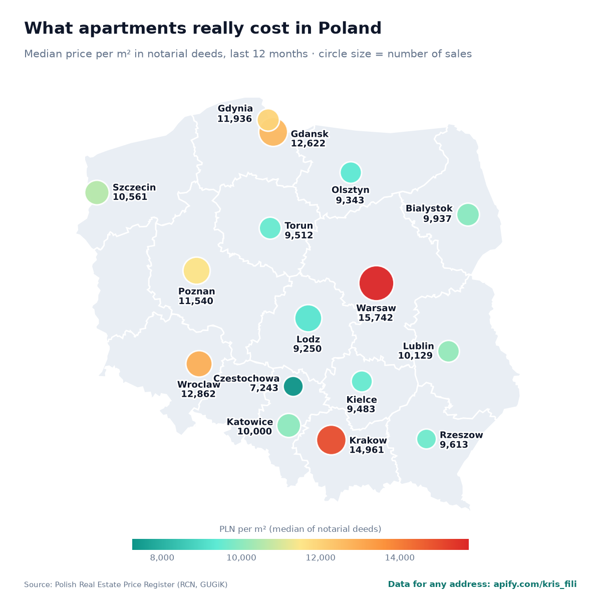
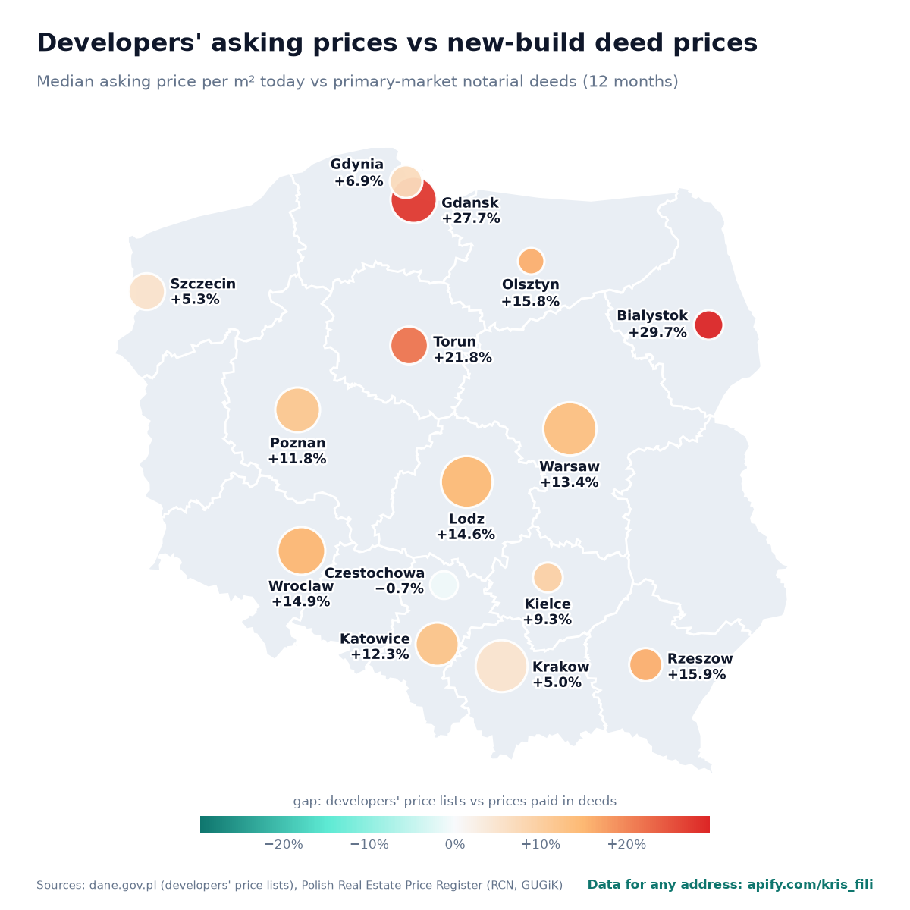

What apartments really sell for in Poland's largest cities: the median price per m² from notarial deeds in the official Real Estate Price Register (Rejestr Cen Nieruchomości, RCN), compared with developers' asking prices from their mandatory daily price lists. Updated every week – last update 2026-10-19.
In the 12 months to September 2026 the median apartment in Warsaw sold for 15,742 PLN per m², in Czestochowa for 7,243 PLN – according to notarial deeds, not listings.
Download CSVWeekly historyGitHub repository

| City | Median deed price, PLN/m² | Year on year | Deeds, 12 months | Developers' asking price, PLN/m² | Asking vs new-build deeds | Deeds up to |
|---|---|---|---|---|---|---|
| Warsaw | 15,742 | +1.7% | 23,596 | 17,195 | +13.4% | May 2026 |
| Krakow | 14,961 | +4.0% | 11,063 | 15,750 | +5.0% | September 2026 |
| Wroclaw | 12,862 | +3.5% | 6,218 | 15,041 | +14.9% | August 2026 |
| Gdansk | 12,622 | +6.5% | 9,733 | 15,250 | +27.7% | January 2026 |
| Gdynia | 11,936 | +2.7% | 2,759 | 13,206 | +6.9% | June 2026 |
| Poznan | 11,540 | +4.1% | 7,251 | 13,200 | +11.8% | September 2026 |
| Szczecin | 10,561 | +9.5% | 4,350 | 12,120 | +5.3% | September 2026 |
| Lublin | 10,129 | +1.2% | 2,367 | 11,140 | – | August 2026 |
| Katowice | 10,000 | +0.4% | 3,894 | 12,750 | +12.3% | September 2026 |
| Bialystok | 9,937 | +5.7% | 3,043 | 13,205 | +29.7% | August 2026 |
| Rzeszow | 9,613 | – | 1,425 | 10,800 | +15.9% | September 2026 |
| Torun | 9,512 | +7.6% | 2,455 | 12,300 | +21.8% | June 2026 |
| Kielce | 9,483 | +5.8% | 2,038 | 11,200 | +9.3% | June 2026 |
| Olsztyn | 9,343 | +8.1% | 2,218 | 11,100 | +15.8% | August 2026 |
| Lodz | 9,250 | – | 7,324 | 11,500 | +14.6% | August 2026 |
| Czestochowa | 7,243 | +2.4% | 1,548 | 8,300 | −0.7% | September 2026 |
The same official sources for any address in Poland, as ready-made APIs (also usable without code, with Excel/CSV export, and from AI assistants through MCP):
Add this remote MCP server to Claude, ChatGPT, Cursor or any other MCP client (sign in with an Apify account on first use):
{
"mcpServers": {
"poland-housing": {
"url": "https://mcp.apify.com?tools=kris_fili/poland-apartment-valuation,kris_fili/poland-real-estate-transaction-prices,kris_fili/poland-new-build-apartment-prices,kris_fili/poland-housing-price-gap"
}
}
}Prefer a local server (stdio, uvx)? See poland-housing-mcp.

Ceny transakcyjne mieszkań z aktów notarialnych w największych miastach Polski, aktualizowane co tydzień: mediana ceny za m² z Rejestru Cen Nieruchomości, rynek pierwotny i wtórny, zmiana rok do roku oraz ceny z cenników deweloperów. Dane dla dowolnego adresu i wycena mieszkania: apify.com/kris_fili.